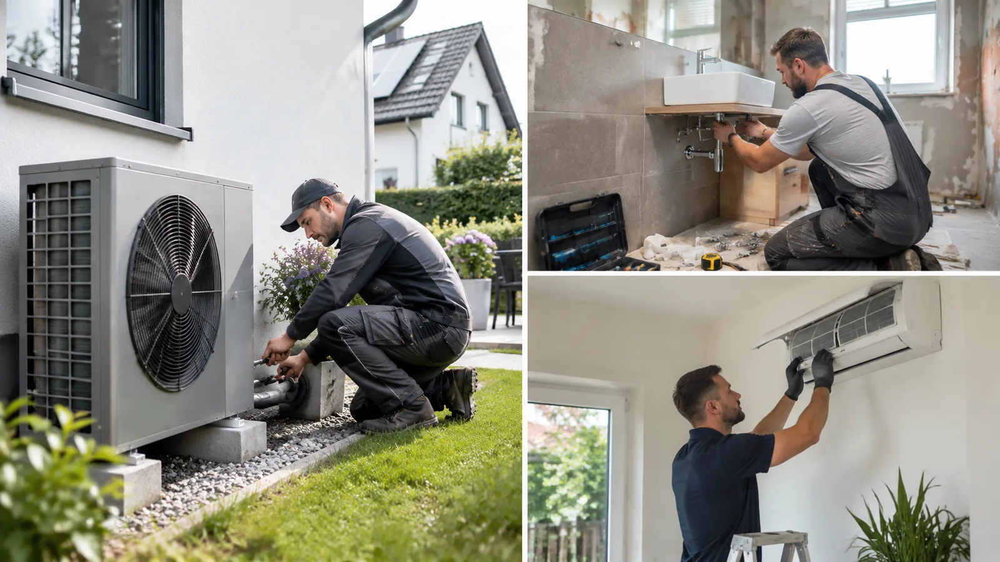
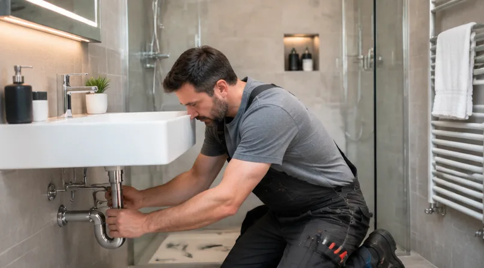
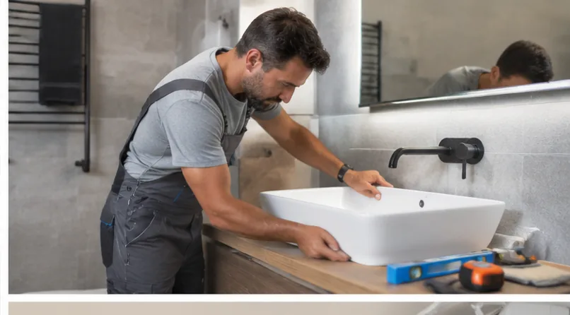
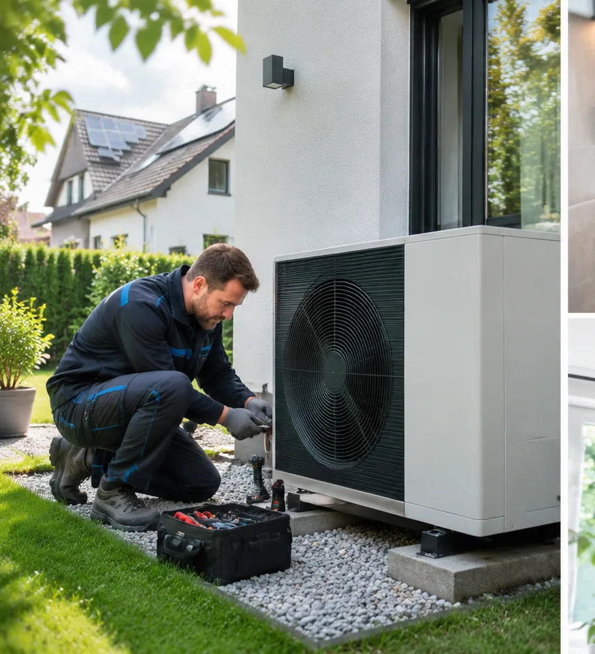
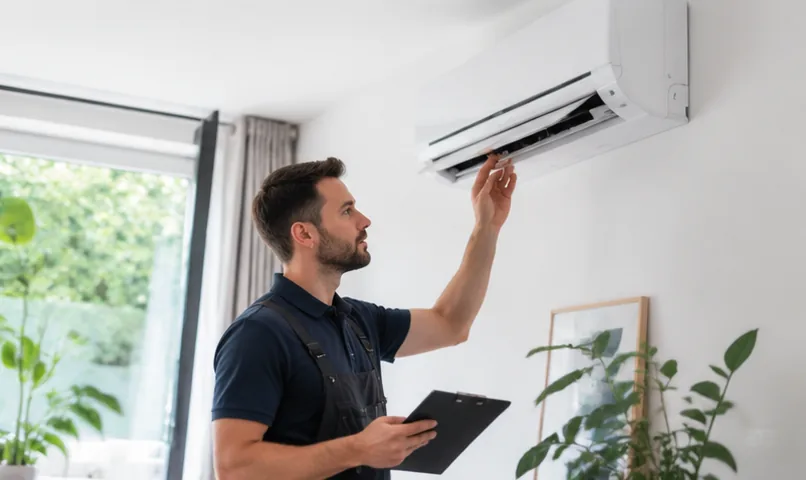
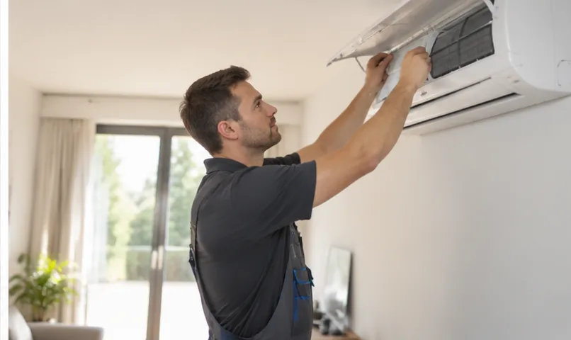

Anfrage
Sie beschreiben Ihr Vorhaben oder Ihre Frage.
Heizung modernisieren, Bad erneuern oder Raumklima verbessern: Finden Sie heraus, welche Haustechnik zu Ihrem Vorhaben passt – und welche Fragen zuerst geklärt werden sollten.

Wenn Wasser, Wärme und Luft zusammenspielen, wird Haustechnik verständlich. Entdecken Sie die Bereiche und finden Sie den passenden Einstieg für Ihr Anliegen.
Alle Leistungen ansehen ↗
Installation und Anschlüsse.
Mehr erfahren ↗
Funktion und Gestaltung.
Mehr erfahren ↗
Modernisierung und Systemwahl.
Mehr erfahren ↗
Erste Orientierung fürs Gebäude.
Mehr erfahren ↗
Lösungen fürs Raumklima.
Mehr erfahren ↗
Serviceanliegen einordnen.
Mehr erfahren ↗Eine neue Heizung ist eine Entscheidung für viele Jahre. Gebäude, Dämmung, Heizflächen und Nutzungsverhalten spielen dabei zusammen. Deshalb beginnt eine gute Lösung mit einer sorgfältigen Einordnung.
Beantworten Sie einige Fragen zu Gebäude, Heizung und Heizflächen. Sie erhalten eine erste Orientierung – ohne technische Prüfung oder Förderzusage.
Check starten ↗ GebäudeHeizsystemHeizflächen
GebäudeHeizsystemHeizflächenOb neue Heizung, Bad oder Klimatisierung: Ein verständlicher Ablauf schafft Orientierung – vom ersten Kontakt bis zur Abstimmung der Umsetzung.
Sie beschreiben Ihr Vorhaben oder Ihre Frage.
Wichtige Rahmenbedingungen werden geklärt.
Mögliche Optionen und nächste Schritte werden besprochen.
Der weitere Ablauf richtet sich nach dem abgestimmten Vorhaben.
Die Bildmotive zeigen beispielhafte Einsatzfelder. Sie sind illustrative Darstellungen und keine dokumentierten Kundenreferenzen. Einblicke ansehen ↗
Sie planen ein Vorhaben in München? Beschreiben Sie kurz Ihren Standort und Ihr Anliegen. Die konkrete Einsatzmöglichkeit lässt sich anschließend abstimmen.
Einsatzgebiet ansehen ↗Hilfreich sind der Ort, die Art des Gebäudes, das gewünschte Gewerk und eine kurze Beschreibung Ihres Vorhabens. Fotos oder vorhandene Unterlagen können die Einordnung erleichtern.
Ja. Der digitale Eignungscheck sammelt einige Eckdaten und gibt eine erste Orientierung. Eine technische Prüfung vor Ort ersetzt er nicht.
Wartung und Reparatur sind als Leistungsbereiche vorgesehen. Beschreiben Sie Ihr Anliegen über die Serviceanfrage, damit der Bedarf eingeordnet werden kann.
Der regionale Fokus dieser Website ist München. Bitte nennen Sie bei Ihrer Anfrage Ihren Ort, damit die konkrete Einsatzmöglichkeit geklärt werden kann.